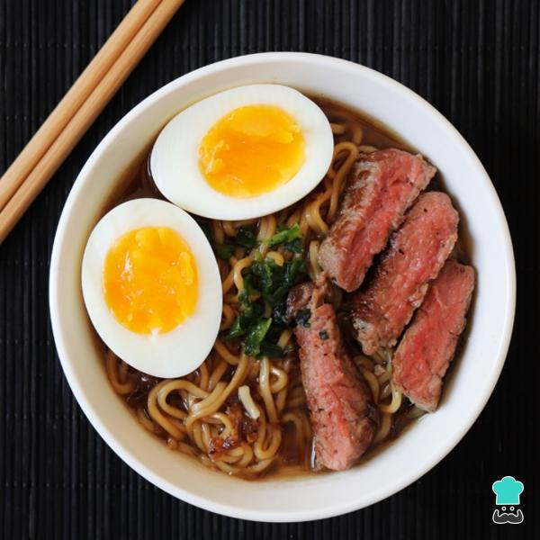

SITES DE RECEITAS
Lamen Japonês

Clice aqui para ver o video do passo a passo da receita
Clice aqui para ver lista completa do passo a passo da receita
Clice aqui para encontrar restaurantes que possui essa receita